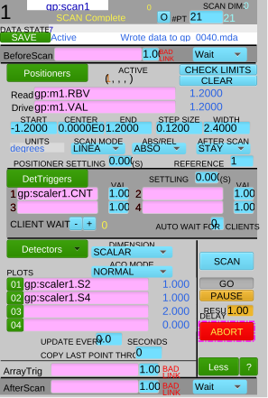
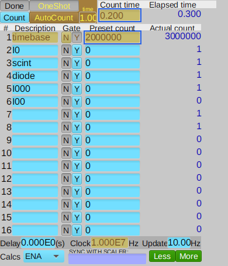

The synApps sscan and SscanRecord#
The synApps sscan record is used to measure scans of detector(s) v. positioner(s).
Goals: Demonstrate use of the sscan record with Bluesky.
Press SCAN button of a preconfigured scan.
Same example as section 1, but uses SscanRecord instead of EpicsSignal.
Setup the same scan from bluesky.
Add the scan data as a bluesky run.
This notebook is intended for those who are familiar with EPICS and its motor, scaler, and sscan records but are new to Bluesky.
sscan record configuration#
Consider this sscan record (gp:scan1) which is configured for a step scan of scaler (gp:scaler1) vs. motor (gp:m1).
Figure (1a) shows gp:scan1 configured to step scan motor m1 from -1.2 to 1.2 in 21 points, collecting counts from scaler gp:scaler1 channels 2 & 4 (I0 & diode, respectively). Figure (1b) shows gp:scaler1 configured with a counting time of 0.2 seconds per point and several detector channels.
Figure (1a) scan |
Figure (1b) scaler |
|---|---|
 |
 |
The SCAN button is connected to EPICS PV gp:scan1.EXSC. The scan starts when SCAN is pressed. (Try it.) When the SCAN button is pressed, the GUI sends 1 to the EPICS PV and the scan starts. When the scan finishes (or aborts), the value of the PV changes to 0 which is then sent back to the GUI.
Python setup#
All these examples need this minimum setup. The first example will not need any databroker catalog. The EPICS IOC has a prefix of gp:.
[1]:
import bluesky
import bluesky.plan_stubs as bps
RE = bluesky.RunEngine()
IOC = "gp:"
2. Run preconfigured sscan record#
The SscanRecord class from apstools.synApps provides access to most fields of the sscan record. Use SscanRecord to connect with gp:scan1. Repeat the above example. In the SscanRecord class, the scan button is called execute_scan.
Again, it is recommended to use an ophyd Status object instead of a polling loop.
[5]:
from apstools.synApps import SscanRecord
scan1 = SscanRecord(f"{IOC}scan1", name="scan1")
scan1.wait_for_connection()
def run_sscan():
yield from bps.mv(scan1.execute_scan, 1)
# Again, it is advised to use a Status object instead of a polling loop.
# Wait for the scan to end with a polling loop.
while scan1.execute_scan.get() != 0:
yield from bps.sleep(0.1)
[6]:
RE(run_sscan())
[6]:
()
Get the data arrays from the sscan record#
Retrieve the data collected by scan1 as a dictionary of numpy arrays. Include the motor and both detectors. The sscan record has buffers capable of collecting as many as 1,000 points per array (in its default configuration). First get the number of points collected, then limit each array length to that number.
Write this as a function so it can be called again later. It does not have any statements that would block the RunEngine and it executes quickly. It does not need to be written as a bluesky plan.
[7]:
def get_sscan_data():
npts = scan1.current_point.get()
data = {
"m1": scan1.positioners.p1.array.get()[:npts],
"I0": scan1.detectors.d01.array.get()[:npts],
"diode": scan1.detectors.d02.array.get()[:npts],
}
return data
get_sscan_data()
[7]:
{'m1': array([-1.2 , -1.08, -0.96, -0.84, -0.72, -0.6 , -0.48, -0.36, -0.24,
-0.12, 0. , 0.12, 0.24, 0.36, 0.48, 0.6 , 0.72, 0.84,
0.96, 1.08, 1.2 ]),
'I0': array([1., 1., 1., 1., 1., 1., 1., 1., 2., 3., 3., 4., 4., 2., 1., 1., 1.,
1., 1., 1., 2.], dtype=float32),
'diode': array([2., 1., 0., 1., 2., 0., 1., 1., 2., 2., 4., 3., 3., 3., 1., 1., 1.,
2., 2., 2., 1.], dtype=float32)}
3. Setup and run same scan from bluesky#
Repeat the scan from the previous examples, but use bluesky to configure scan1. It will be useful to connect the motor, the scaler, and two of the scaler channels.
[8]:
from ophyd import EpicsMotor
from ophyd.scaler import ScalerCH
m1 = EpicsMotor(f"{IOC}m1", name="m1")
scaler1 = ScalerCH(f"{IOC}scaler1", name="scaler1")
m1.wait_for_connection()
scaler1.wait_for_connection()
# for convenience
I0 = scaler1.channels.chan02.s
diode = scaler1.channels.chan04.s
We can supply the count time per point and scan range parameters as arguments to the setup. After setting the counting time for the scaler, the next step in the setup is to clear any existing configuration of scan1 using its reset() method. Because scan1.reset() was written as an ophyd function, we’ll call it with yield from run_blocking_function(scan1.reset).
Finally, we’ll setup scan1 with the EPICS PV names to be used.
[9]:
from apstools.plans import run_blocking_function
def setup_scan1(start, finish, npts, ct=1):
yield from bps.mv(scaler1.preset_time, ct) # counting time/point
yield from run_blocking_function(scan1.reset)
yield from bps.sleep(0.2) # arbitrary wait for EPICS to finish the reset.
# positioners
yield from bps.mv(
scan1.number_points, npts,
scan1.positioners.p1.start, start,
scan1.positioners.p1.end, finish,
scan1.positioners.p1.readback_pv, m1.user_readback.pvname,
scan1.positioners.p1.setpoint_pv, m1.user_setpoint.pvname,
)
# triggers (push scaler count button at each point)
yield from bps.mv(
scan1.triggers.t1.trigger_pv, scaler1.count.pvname,
)
# detectors
yield from bps.mv(
scan1.detectors.d01.input_pv, I0.pvname,
scan1.detectors.d02.input_pv, diode.pvname,
)
Setup the scan.
[10]:
RE(setup_scan1(-1.2, 1.2, 21, 0.2))
[10]:
()
Run the scan. We should not have to reprogram this plan.
[11]:
RE(run_sscan())
[11]:
()
Get the scan data. Same function as before. It’s not a bluesky plan, so RE() is not needed.
[12]:
get_sscan_data()
[12]:
{'m1': array([-1.2 , -1.08, -0.96, -0.84, -0.72, -0.6 , -0.48, -0.36, -0.24,
-0.12, 0. , 0.12, 0.24, 0.36, 0.48, 0.6 , 0.72, 0.84,
0.96, 1.08, 1.2 ]),
'I0': array([1., 1., 1., 1., 1., 1., 1., 1., 2., 2., 4., 3., 3., 2., 1., 2., 2.,
1., 1., 1., 1.], dtype=float32),
'diode': array([1., 1., 2., 1., 2., 1., 0., 1., 2., 2., 4., 3., 3., 1., 1., 2., 0.,
1., 1., 1., 1.], dtype=float32)}
4. Post data to bluesky as a run#
So far, we have just run scan1 and shown the data collected. We’ll need to do a bit more work to get this data into bluesky as a run.
Bluesky obtains data for a run from an ophyd Device or Signal. We’ll need to convert the data arrays into a structure that the RE will accept.
While we might just use bps.read(scan1) to get the data, the data would be named according to the scan1 structure. We want more meaningful names so we re-assign the names of the original objects (motor and scaler channel names).
To post bluesky data, it must come from an ophyd Device (subclass). (See here for help with Device and Component.)
The ThisScanData() class is such an ophyd Device subclass, customized for the arrays of our scan1. We’ll read the arrays from scan1, then write them (using bps.mv()) to our custom device. Since we do not have timestamps for each of the data points, we’ll post the entire array as a single RunEngine event. The event will have the timestamp from the bps.mv() plan stub.
As we make an object of this class, we define name="scan1" so the names of the data in the databroker will appear as scan1_m1, scan1_I0, & scan1_diode.
The steps are all descriptive. The run is opened with the metadata dictionary supplied (md), the primary stream is created and written with the scan_data, then all is buttoned up and bluesky finishes the run.
[13]:
from ophyd import Component, Device, Signal
class ThisSscanData(Device):
m1 = Component(Signal)
I0 = Component(Signal)
diode = Component(Signal)
scan_data = ThisSscanData("", name="scan1")
def post_sscan_data(md={}):
yield from bps.open_run(md)
yield from bps.create(name="primary")
data = get_sscan_data()
yield from bps.mv(
scan_data.m1, data["m1"],
scan_data.I0, data["I0"],
scan_data.diode, data["diode"],
)
yield from bps.read(scan_data)
yield from bps.save()
yield from bps.close_run()
Now we need a databroker catalog. Make a temporary one for this notebook.
[14]:
import databroker
cat = databroker.temp().v2
RE.subscribe(cat.v1.insert)
[14]:
0
Post the data from the recent scan as a new bluesky run.
Note: A bluesky plan can generate zero or more runs, each indexed by a uid. Print the tuple of run uids returned from RE().
[15]:
uids = RE(post_sscan_data())
uids
[15]:
('b40e4926-d365-4c72-9936-76d28425c7fc',)
Get the run entry (by uid) from the catalog.
[16]:
run = cat[uids[0]]
run
[16]:
BlueskyRun
uid='b40e4926-d365-4c72-9936-76d28425c7fc'
exit_status='success'
2024-03-18 16:06:34.111 -- 2024-03-18 16:06:34.117
Streams:
* primary
Show the data arrays from the run’s primary stream. The data are returned as a single xarray Dataset.
[17]:
run.primary.read()
[17]:
<xarray.Dataset>
Dimensions: (time: 1, dim_0: 21, dim_1: 21, dim_2: 21)
Coordinates:
* time (time) float64 1.711e+09
Dimensions without coordinates: dim_0, dim_1, dim_2
Data variables:
scan1_m1 (time, dim_0) float64 -1.2 -1.08 -0.96 -0.84 ... 0.96 1.08 1.2
scan1_I0 (time, dim_1) float32 1.0 1.0 1.0 1.0 1.0 ... 1.0 1.0 1.0 1.0
scan1_diode (time, dim_2) float32 1.0 1.0 2.0 1.0 2.0 ... 1.0 1.0 1.0 1.0Combined setup, scan, post data#
Instead of calling the RE() separately with each of these plans, combine them into an outer plan.
[18]:
def combined(start, finish, npts, ct=1, md={}):
yield from setup_scan1(start, finish, npts, ct=ct)
yield from run_sscan()
yield from post_sscan_data(md)
Run the combined plan and retrieve the data from the databroker catalog.
[19]:
uids = RE(combined(-1.2, 1.2, 21, ct=.2))
cat[uids[0]].primary.read()
[19]:
<xarray.Dataset>
Dimensions: (time: 1, dim_0: 21, dim_1: 21, dim_2: 21)
Coordinates:
* time (time) float64 1.711e+09
Dimensions without coordinates: dim_0, dim_1, dim_2
Data variables:
scan1_m1 (time, dim_0) float64 -1.2 -1.08 -0.96 -0.84 ... 0.96 1.08 1.2
scan1_I0 (time, dim_1) float32 2.0 0.0 0.0 0.0 0.0 ... 1.0 1.0 1.0 1.0
scan1_diode (time, dim_2) float32 2.0 0.0 0.0 1.0 1.0 ... 1.0 1.0 1.0 1.0